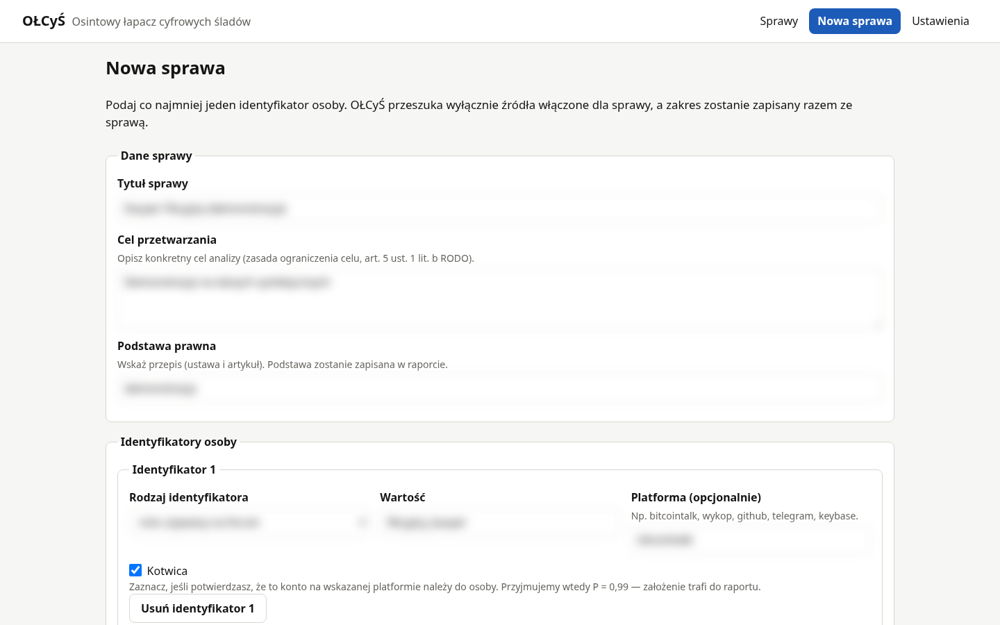
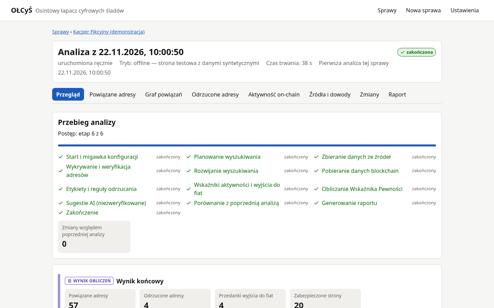
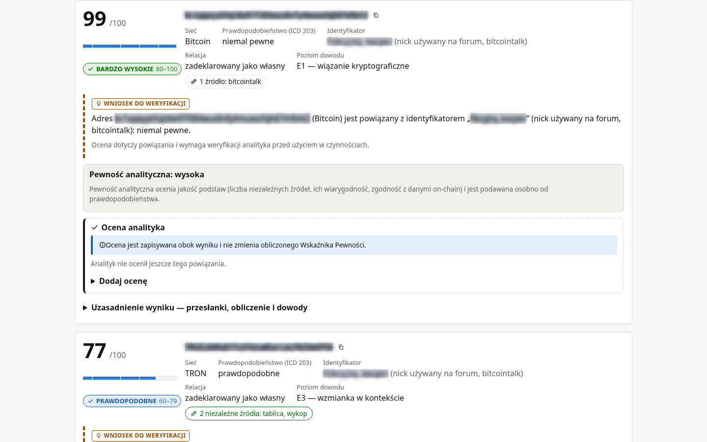
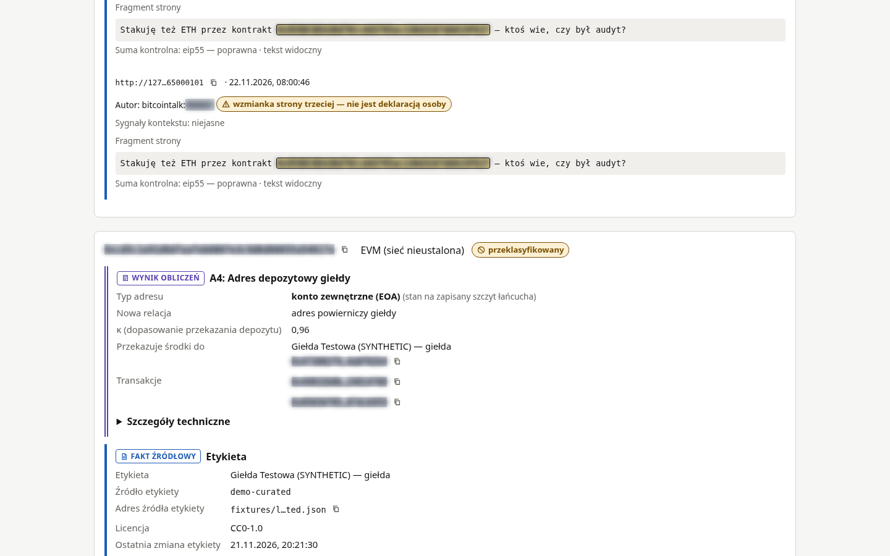
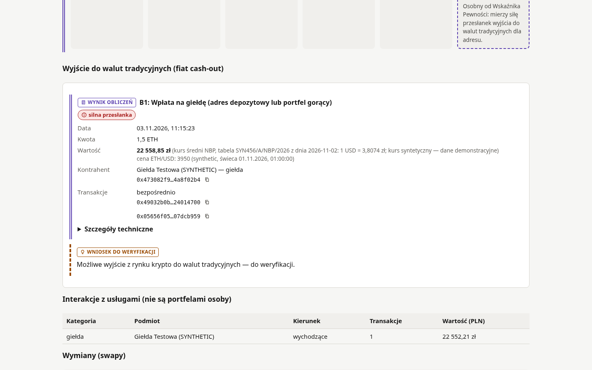
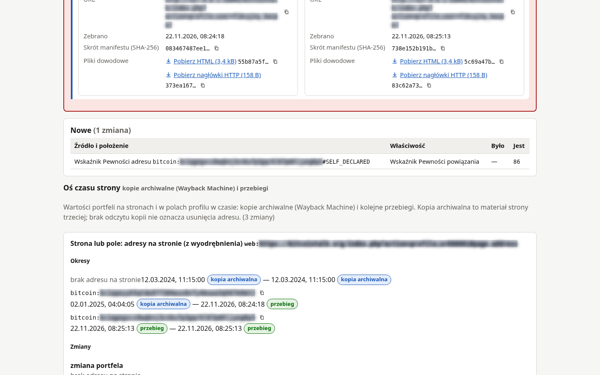
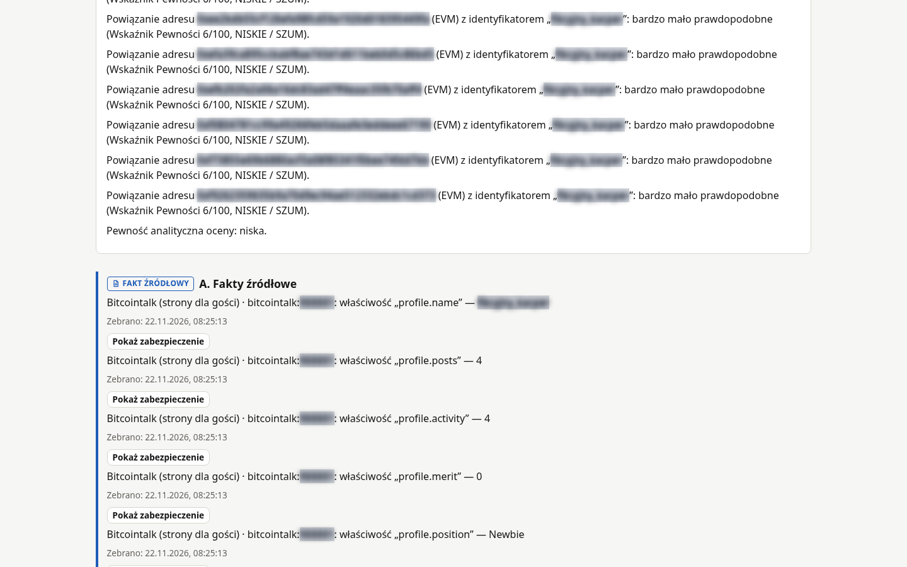

Od identyfikatorów badanej osoby do raportu o wartości dowodowej, wyłącznie z publicznych źródeł.



| Przedział | Znaczenie |
|---|---|
| 80–100 | bardzo wysokie |
| 60–79 | prawdopodobne |
| 40–59 | średnie |
| 10–39 | niskie (szum) |
| 0 | wykluczenie |
Wagi są nieskalibrowane; wynik opisuje powiązanie, nie osobę.




pnpm check.